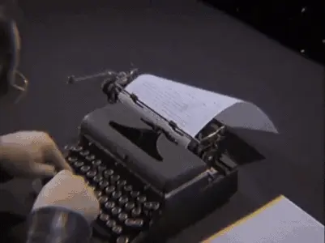

solids
weird web october
blink
suboptimal subtext subscript

“I know
writers
(re: talentless hacks)
who use
subtext
,
(poor fools)
and they're all
cowards
(COWARDS!!)
"
-
Garth Marenghi
(author, dreamweaver,
visionary
... plus actor, staring in the critically acclaimed & aptly-named
Garth Marenghi's Darkplace
)